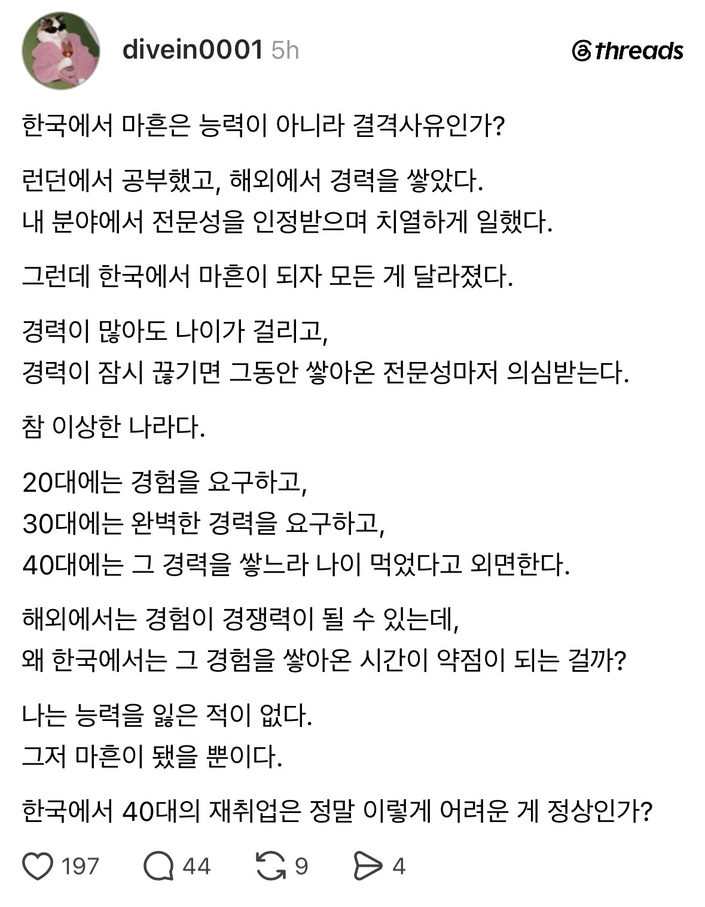
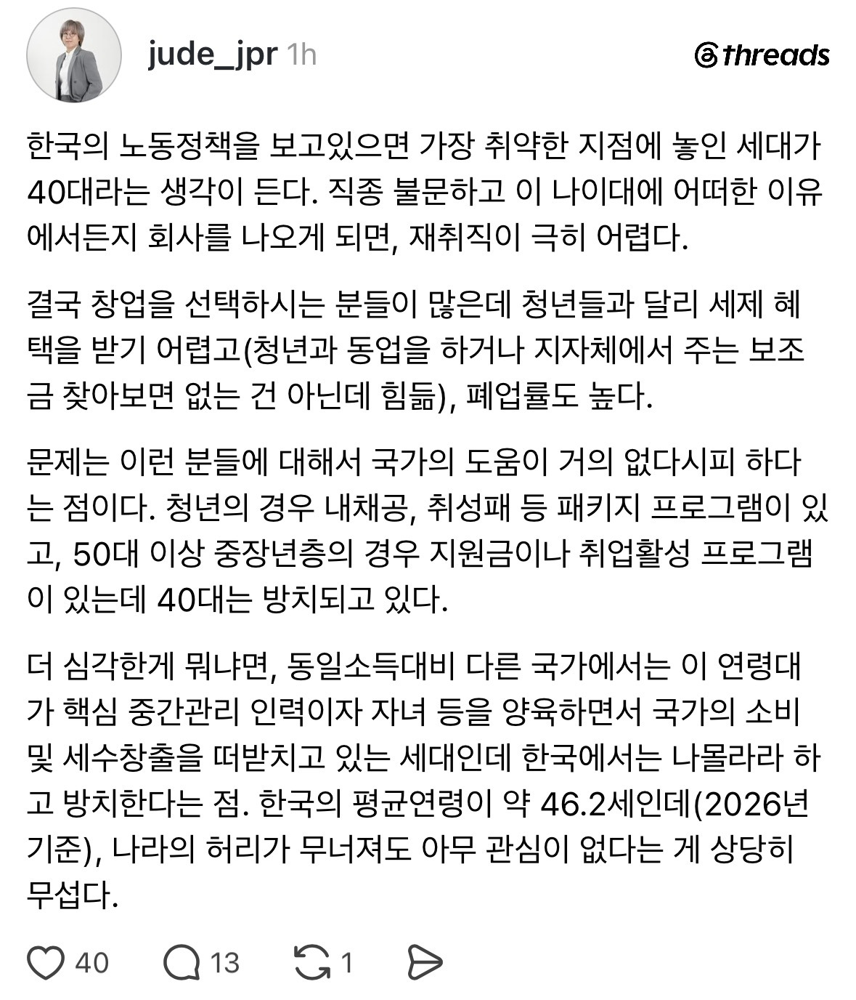

여기서 좌우로 편가르기 하지마라 좌파들이 좋아하는 좆포티의 왕 섹백좌 때문에 다 말아먹었으니
그사람은 50대고, 편가르기가 아니라, 성향에 대한 이야기임
애당초 편가르기는 "40대가 20대에게 개인의 노력을 강요한다" 이게 세대별 편가르기고
그리고 40대는 그런적이 없다 라는게 어떻게 편가르기가 됨?
원래 사람의 성향은 구분이 되는것이고
좌파성향이냐 우파성향이냐에 따라 여러가지가 다르게 생각함
정부에서 해줘야 한다! 이게 좌파
개인이 노력해야한다! 이게 우파
이거는 그냥 아주 나이브하게 좌파우파 성향에 대한 서술일 뿐이고
그래서 좌파성향이 강한 40대는 딱히 그렇게 20대에게 노력을 강요하지 않았다는 주장인데 이게 왜 편가르기임?
자동차 얘기를 맨날 쓰는 사람들이 있다면 남자일 가능성이 크다 이거랑 다를바 없는 얘기임
뭐 정규직 제도로 꿀빨았으면 ㅈ되는 것도 있는거지 세상이 다 좋을 수가 있나
40대 안 뽑히는 이유는
실무를 안 할라고 꺼드럭 대기만 해서임.
팀장만 할라는데 왜 뽑음
실제 써보니까 시켜서 하면 하는거고 못하면 그 뒤로도 쭉 못함
한마디로 포폴도 십년전꺼 들고 잇으면서 연봉은 비싸서 안뽑히는거 아님? ㅋㅋ 자기계발 안햇으면 달게 받아야지 ㅋ
솔직히 특별한 재주 있는거 아니면 40대 이상부터는 사무보조도 못따라가는 사람들 수두룩함. 그러면서 장을 해먹으려한다?
이런 글 갖고오면, 혐오 전문 사이트 개드립은 이때다 싶어서 혐오함 ㅋㅋㅋㅋ
노오력이 부족한거 아님?
임원들 잘만 이직하던데
보통 중소임원들 말고 대기업임원들은 학력이 좋아서 쉽게쉽게감
학력이 최고구나
노무사양반 똑똑하네
연공서열이 계급 위에 있는 나라라서 그렇지 뭐ㅋㅋ 이 나라에서 자기보다 어린 상사들한테 부려지는거 버틸 수 있는 사람 몇명 안돼
무조건 '어린 놈의 새끼가 나한테 이래라 저래라 한다' 라는 생각을 하게 되어있고 반드시 서열 관련된 문제를 일으키니 회사에서 절대 안뽑아주지
다같이 어이 김씨 박씨 하면서 일하는 노가다나 공장판에나 가야지 별 수 없다
사용자가 이익이 될 만한 사람이면 40대가 아니라 90대여도 뽑지
애초에 실질적으로 이득이 되는지 안되는지는
실제 채용해서 적어도 3개월 이상 고용해보는게 아닌 이상 알 수 없음.
근데 나이에 대한 선입견 때문에 먼저 걸러지는 경우가 아주 많은게 현실임.
그리고 사용자가 뽑는게 아니고 팀장이 뽑고 인사과에서 뽑는 경우가 많으니
실제 사용자에게 이득이 되는경우보다 오히려 직원들이 자기들한테 이득이 되는 사람을 뽑는 경우도 많음.
기업이 그렇게 합리적으로 돌아갈거라고 생각함??ㅋㅋ
딸린 가족이 있다는 점은 불쌍하지만 40대는 그나마 쌓은 자산이라도 있으니까요.
20대는 학자금 대출로 마이너스로 시작하는데 그게 30대에 전부 상환합니다.
빚쟁이 20대, 현재는 여유 있지만 집으로 스트레스 받는 30대, 집이랑 돈은 있지만 짤릴까봐 눈치보는 40대가 현실이죠.
40대들이 20대 30대일때 기회받은거 아님?
좆같은 연공서열은 조선시대때도 없던걸
영포티들 똑바로서라. 노오력이 부족하다
비빌언덕이 잇으니깐 안가는거지
경력에 신입월급받는다고 하면 좋아라 뽑음
뭐라는거야 ㅋㅋ 노오력을 해야지 게을러터진 씹련들이 ㅋㅋ
30대 팀장들이 본인보다 나이많아서 불편하다고 40대이상 안뽑다가, 본인이 이제 40대 되니까 어디 갈지 갈피를 못잡는 모습.. 은 내 주변도르였구요.
중국처럼 가는구나 40되면 다 짤리는게
우리는 그나마 병역문제랑 첫취업까지 늦으니까 40대로 밀리는듯
평균퇴직연령 51.3세 너무 빠르다 딱 자녀가 고등학생 고학년이거나 대학생일텐데.. 사회적으로 큰 문제다 고령화는 더 심해지는데 노동환경의 혁신이 필요하긴 해보이는데 각자 밥그릇 챙기느라 참 딱하다 아버지들
너가 인생을 대충 살아서 그럼ㅋㅋ
나이대에 상관없이 회사에 충성하면 클납니다 ㅠㅠ
지금 405060은 취업이라도 날먹이였지
지금 젊은세대 그리고 점점 올라올 그 밑 애들 생각하면 그냥 지옥임 ㅋㅋ 시작조차 못함
사람 뽑는다는건 책임을 지는거임, 나 책임져달라고 땡깡 부리는거랑 뭐가 다르냐, 인정받는 수준이면 서로 모셔간다 시장은 틀리지않아
써본 내부 인사들 중 골라서 승진 올리기도 바빠 죽겠는 상황에서 안 써본 외부 인사가 뽑히려면 압도적인 걸 보여줬어야 함. 그럴싸한 사람 뽑았어도 삐끗하면 포티투닷 꼴이 나버림.
노오오오오오력이 부족해서임
핑계 찾지마셈
한국이 미개해서 ㅇㅇ 일본엔 자리 많음 다 좋은건 아니지만ㅋㅋ 븅신들 이민안가면 미개한 똥밭에서 사는거지들
더블이대남 이 불쌍한 녀석들
한국이 망하는 이유
예전에는 2030이 노력 안했는데
지금은 4050이 노력을 안해서
나중에는 6070이 노력 안할 예정
망한다 망한다 하는데 언제 망함
반도체 특수로 역대 한국 최대 호황인데
40대 넘어서부터는 원래 자리가 없어서 회사에서도 내쫓으려고 난리인데 자기발로 나갔으면 끝임
신입으로 뽑더라도 당연히 30대를 뽑지
근데 업종마다 다름 신입이라도 나이 불문 40대 뽑는 경우도 있음
노력 관련해서 왜 40대를 패는건지 모르겠는데, 우파성향일수록 개인의 노력을 중요하게 여기는 성향이 큼
과거 그러한 개인에게 책임을 묻는것에 대해 노오오오력, 노력충 뭐 이런걸로 팼던게 지금 3중후 ~ 40대고
김제동이 하던 "나라가 해줘야 한다"를 믿고 있는게 지금의 40대임
오히려 일 잘하고 있는(자기는 도태되지 않았다고 믿는) 우파성향 30대나 컴퓨터에서 좀 먼 mz이후의 50대 이상의 사람들이 20대보고 노력안한다고 하고 있는건데
어느 세대보다 좌파적인 40대보고 20대에게 노력하라고 했다느니하면서 따지는거보면 이해가 안됨
"노력이 부족하다" 전형적인 그냥 우파성향인 사람들의 발언인데